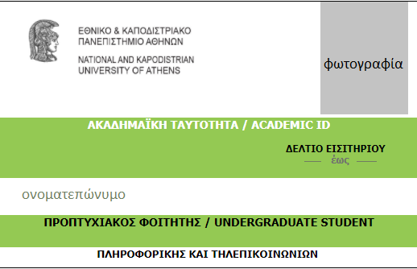
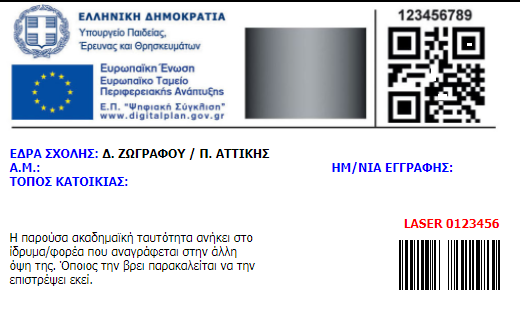

Η ακαδημαϊκή ταυτότητα, ή αλλιώς το ΠΑΣΟ όπως ίσως θα το έχουν ακούσει οι περισσότεροι είναι ένα δελτίο που αποδεικνύει την φοιτητική μας ιδιότητα. Περιέχει το όνομα της σχολής, το όνομα του φοιτητή, την φωτογραφία του, τον τόπο κατοικίας του και την ημερομηνίας ισχύος της ταυτότητας (ν+2 έτη).
 Με το πάσο δικαούμαστε εκπτώσεις σε πάρα πολλά πράγματα. Ενδεικτικά:
Ακόμη, πολλές εταιρίες για να προσελκύσουν πελάτες παρέχουν εκπτώσεις σε φοιτητές. Αρκεί να επικοινωνήσει κανείς με την εκάστοτε εταιρία για να μάθει αν δικαιούται έκπτωση με το πάσο του.
Παραλαβή ακαδημαϊκής ταυτότητας
Μετά την εγγραφή στο τμήμα και την απόκτηση κωδικών εισόδου στις υπηρεσίες του πανεπιστημίου, μπαίνετε στην Ηλεκτρονική Υπηρεσία Απόκτησης Ακαδημαϊκής Ταυτότητας.
Κάνετε είσοδο ως Προπτυχιακός Φοιτητής με τους κωδικούς που μπαίνετε και στο eclass και συμπληρώνετε την αίτηση ακολουθώντας τις οδηγίες. Το υπουργείο θα σας ενημερώσει με mail/sms για την κατάσταση της αίτησης.